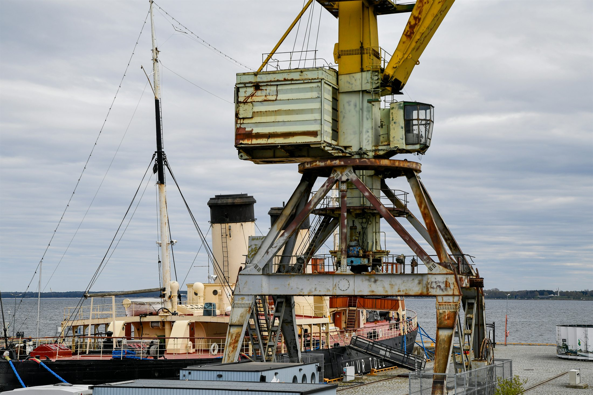

Crane sales & supply
Explore crane and lifting equipment options for your operation.
Explore cranes ↗Crane sales, rental and refurbishment—planned around your site.

Explore lifting systems for demanding industrial sites.
Browse crane sales and rental, refurbishment, parking, access and security systems, plus service support for existing equipment.
Explore crane and lifting equipment options for your operation.
Explore cranes ↗Ask about temporary or project-based equipment availability.
Ask about rental ↗Review existing lifting equipment and discuss upgrade paths.
Explore refurbishment ↗Manage vehicle entry, parking flow and designated access.
Explore parking & access ↗Discuss vehicle protection and controlled site approaches.
Explore protection ↗Plan inspections, repairs, spare parts and control upgrades.
Explore support ↗Choose a category, then pick what you need.
Good equipment begins with a clear understanding of the work it must do.
Discuss the location, work cycle, access and operating conditions.
Review options and agree on a practical project approach.
Coordinate installation, maintenance and servicing as needed.
KBS Industrial Crane & Electromechanical Solutions Private Limited is based in Kadavanthara, Kochi. The team works across crane and lifting systems, access control, parking and perimeter equipment.
Whether you have a defined scope or are still shaping the requirement, start with a conversation about your site.
Meet KBS ↗Tell us what you are planning, where the work will happen and what you already know. We’ll help you take the next step.
Explore answers about KBS services, crane types, access systems, quotations and support. Then use the project planner to organise what your facility needs.